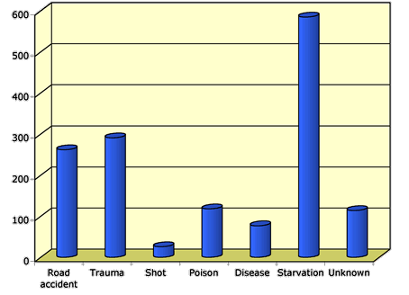
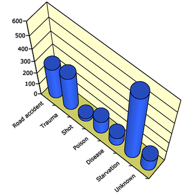
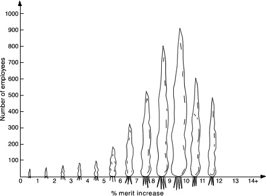

Chartjunk
|
If a categorical data set has only a few distinct categories, the information in
it can be very simply expressed. For example, consider the sex of each of 160
sparrows that an ecologist trapped. The bar chart on the right only shows that
there were 100 males, 62.5% of the captured birds.
|
 |
Since the information contained in a bar chart is often simple (only 2 values
above), it is tempting to embellish bar charts 'artistically' to make them more
visually appealing. These additions are collectively called chartjunk.
Many spreadsheets, such as Microsoft Excel, make it easy to add chartjunk to bar
charts.
In general, chartjunk should be avoided — it is usually easier to read information
from a standard bar chart. Rather than adding chartjunk, draw the bar chart small
or replace it with a frequency table.
Three-dimensional chartjunk
A common form of chartjunk is obtained by changing each bar into a 3-dimensional
object. When the resulting 3-dimensional picture is rotated, it often becomes
harder to compare the heights of bars and to read off values from the axes. In
particular, perspective views should be avoided.
Kestrel causes of death
The diagram below was produced by Microsoft Excel to show the causes of death
of kestrels in Britain.

Although this display is more visually appealing than the original barchart,
it is now harder to assess whether the numbers dying from Trauma were just over
or under 300.
Although the above barchart is still acceptable, the extra rotation and perspective
viewpoint of the diagram below make it an extremely poor representation of the
data.

Avoid drawing bar charts in 3-dimensions.
Replacing bars with objects
A second type of chartjunk is obtained by replacing the rectangular bars in
a barchart with pictures of objects. This a much more serious problem since it
often visually mis-represents the proportions in the different categories. Are
the frequencies proportional to the heights of the objects, their areas on the
paper or their 3-dimensional volumes? At a quick glance, most readers would use
something between area and volume though it is usually the heights of the bars
that actually determine the size of the objects in this type of diagram.
Merit raises
As part of a study of how merit pay policies are tied to employee performance,
data were collected about the merit raises (measured as a percentage of salary)
for 3,990 employees in a large company. The diagram below was published to summarise
the data.

The use of carrots for the bars is very misleading since doubling the height
(corresponding to double the frequency) corresponds to four times the
area of the carrot and eight times its volume.
In particular, the employees getting under 5% merit increase seem visually
unimportant, but they comprise nearly 10% of the total employees.
Using pictures of objects instead of bars in a barchart is
misleading and must be avoided.
(The merit increases above are really continuous
numerical values and a histogram would have been a more appropriate display.
However numerical data are occasionally grouped and treated as categorical
for analysis.)